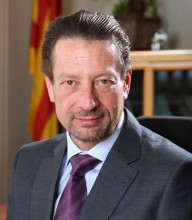

Please note: the AAS Obituaries are temporarily being hosted on this website while their full content is being ingested into the PubPub publishing platform newly adopted by the Bulletin of the American Astronomical Society. When the migration is complete, your existing links will take you to the final, migrated content. Contact peter.williams@aas.org with any questions.
Enrique García-Berro Montilla (1959-2017)
Enrique García-Berro Montilla passed away on 23 September 2017 during an unfortunate hiking accident in the Huesca Pyrenees in northern Spain. Enrique was born in Jaen, Spain, on 3 March 1959. He started his studies in Physics at the University of Barcelona where he received his degree in 1982. Soon after, he began his Ph.D. thesis under the supervision of one of us (Jordi Isern) on the evolution of white dwarfs and their use in the study of the history of the Galaxy, which he defended in 1988 with the maximum qualification.
Enrique married Isabel, a biologist at the University of Barcelona, and the couple had three wonderful children: Aurora, Isabel and Ignacio. He loved great challenges in all aspects of life and was a keen hiker and cyclist in the mountains, activities he enjoyed until the last minute of his life.
In 1987 Enrique had already obtained a permanent position as Associate Professor in Applied Physics at the Polytechnic University of Catalonia (UPC) and in 2003 he was promoted to the level of full Professor. From 2006 to 2013, he worked as a Vice-Rector at the university. During this period of time, he showed his extreme expertise in the administrative affairs related to the selection and promotion of the faculty. In fact, soon afterward, he was selected by the Government of the Generalitat of Catalonia as director of the Serra-Hunter Programme, whose main objective was the careful selection of scholars for the faculty at all the universities of Catalonia. This programme has turned out to be extremely successfully since, as a consequence, several universities and research groups in Catalonia are now among the best in the world, according to the Shanghai ranking. Enrique was also sub-director of the Institut d'Estudis Espacials de Catalunya (IEEC) from 2002 to 2005.
Probably one of the most important events in Enrique’s scientific life was his stay at the University of Illinois at Urbana-Champaign, where he joined the research group of Professor Icko Iben Jr., one of the recognized authorities in the field of stellar evolution. There he studied the late phases of the stars at the limit between those that end their lives as white dwarfs or undergo gravitational collapse. The articles he and Professor Iben produced during this stay are considered as standard references in the field.
The expertise acquired by Enrique during his stay at Urbana-Champaign was the fuel he needed to create the astrophysics research group at the UPC, showing that this scientific subject fit very well within a Polytechnic University due both to its thematic transversality and to the development of the necessary technology associated with the instrumentation on Earth and on satellites. He also participated in an Italian-Spanish project for the design and construction of a powerful data compressor specially adapted for space missions (SIXE).
Concerning his main scientific achievements, Enrique was a pioneer in the study of the physics of white dwarfs, in particular the effects of the crystallization processes of Coulomb plasmas on their cooling and pulsation periods. Little by little, he extended his studies on the collective properties of white dwarfs as a tool for the understanding of Galactic properties, i.e., the determination of the age of the disc and the history of star formation in the Galaxy. In very recent years, Enrique was involved in hydrodynamical simulations of white dwarfs as the progenitors of novae and supernovae and as emitters of gravitational waves in the case of collision. In fact, he was the main promoter of the July 2017 nomination of Kip S. Thorne (awarded the Nobel Prize in 2017) as Doctor Honoris Causa by the UPC, and had honour of giving the presentation talk for Professor Thorne to the UPC community during the investiture ceremony. As a result of this inexhaustible capacity for research, Enrique was author of more than 180 referred articles (some of them in Nature) and served as supervisor of fourteen Ph.D. theses.
Enrique’s scientific contributions, many of them quite original, have greatly expanded the frontier of current stellar astrophysics. Unfortunately, the premature death of Enrique García-Berro, just at the height of his maximum intellectual capacity and scientific fertility, has cut short this source of knowledge. We knew Enrique for decades, not only in the scientific context, but also as a friend and compassionate human. Enrique was an extremely honest and sincere person almost to the point of innocence. We will greatly miss his friendship, kindness and wisdom.
Obituary Written By: Jordi Isern, Margarida Hernanz (ICE(CSIC) & IEEC, Barcelona); Jordi José, Santiago Torres (UPC & IEEC, Barcelona); Carlos Abia (University of Granada).
Photo: Courtesy of Carlos Abia
Obituary written by: Jordi Isern, Margarida Hernanz (ICE(CSIC) & IEEC, Barcelona); Jordi José, Santiago Torres (UPC & IEEC, Barcelona); Carlos Abia (University of Granada)
BAAS Citation: BAAS, 2017, 49, 032